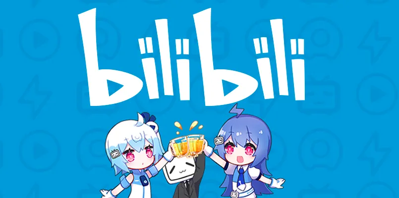

Vamos falar sobre o Bilibili o “YouTube” chinês
Tem uma nova plataforma de compartilhamento de vídeos no pedaço e o que todo mundo quer saber é: vai bater de frente com o YouTube?
Veja também no canal:
- Sim, o TeClas já está no Bilibili, mas vamos falar mais sobre isso ao final
https://www.bilibili.tv/en/video/4800743481940992
- Desde a notícia da abertura mundial do Bilili, só se fala disso nos círculos de criação de conteúdo.

A Bilibili, uma das maiores plataformas de vídeos da China, está acelerando sua expansão internacional e colocando o Brasil entre os mercados estratégicos para o crescimento fora de seu país de origem. A empresa, frequentemente chamada de “YouTube chinês”, combina vídeos produzidos por usuários, transmissões ao vivo, games, anime, música, documentários e uma comunidade altamente participativa.
O movimento ganhou força em 2026. A Bilibili relançou seu aplicativo internacional, prepara uma versão de seu site em inglês e começou a contratar profissionais em mercados como Brasil, Estados Unidos, Reino Unido, México, Turquia e Japão. No Brasil, já existem vagas voltadas à construção de comunidades, relacionamento com criadores e desenvolvimento de parcerias locais.
O que é? De onde vem?
-
Bilibili é uma plataforma gigante de compartilhamento de vídeos baseada em Xangai, focada em conteúdo licenciado de animação e jogos em conjunto com conteúdo original de usuários e um foco na construção de comunidade
- Diversas bolhas de nicho específicas
- Sistema de comentários por cima do vídeo (“danmaku”)
-
A proibição de atuação do Google na China deixou a porta aberta para o desenvolvimento de alternativas locais e ajudou a plataforma florescer
-
Surgiu em 2010 como um spinoff da comunidade de ACG (Animation, Comics and Games) e a partir de uma comunidade de fãs da Hatsune Miku
- Isso é uma coisa que vocês vão notar, o pessoal aqui é otaku mesmo

- O foco do site sempre foi na construção de comunidades de nicho e a interação entre usuários, por exemplo tendo uma modalidade de membro (que pode comentar) que exige uma prova de 100 perguntas por exemplo…
O processo envolve passar em um teste de 100 perguntas de múltipla escolha, acertando pelo menos 60 delas em um período de uma hora. Os tópicos abordados incluem direitos autorais, etiqueta de comentários, neologismos da plataforma e questões específicas sobre temas de sua escolha (um exemplo de pergunta de quando fiz o teste recentemente: em Game of Thrones, qual das opções a seguir não faz parte da Fé dos Sete?).
- Com o tempo a plataforma capitalizou em cima dessas sub comunidades e cresceu o seu apelo para além de weebs e geração Z chinesa. Começando a ganhar dinheiro em 2017

- Esse artigo aqui é extremamente interessante pra vocês entenderem uma visão mais contextualizada:
https://lillianli.substack.com/p/an-introduction-to-bilibili-
-
Hoje o Bilibili é uma empresa que já fez um IPO em 2018 de U$483mi e teve investimentos posteriores da Alibaba, Tencent e Sony.
-
A monetização não é tão focada em propagandas, a estratégia tem sido cultivar um os públicos nichados da geração Z e vender parcerias, por exemplo com jogos e produtos para esses nichos.
- Tem muito a ver com a competição entre plataformas na própria China, o Bilibili é a diferentona
O que isso significa para o Brasil?
- Todo mundo só quer saber uma coisa? Como vai ser a monetização no Brasil???

-
E existe um desejo imenso de se encontrar uma plataforma que possa bater de frente com o YouTube… porque?
-
Hoje o YouTube é uma plataforma sem paralelos na questão de monetização, divisão das receitas, análises, demografias e etc…
-
Isso quer dizer que cada uma das mudanças pra pior ou para espremer um pouquinho da margem de criadores doem muito na gente
- Nenhuma outra plataforma consegue bater de frente com eles e realmente disputar criadores na base do $$$
- Por exemplo temos recentemente o Netflix disputando os GRANDÕES do YouTube que é a execeção que comprova a regra

-
O que o Bilibili pode fazer é dar um sufoco no YouTube e ajudar os criadores menores a valozirarem seu passe frente às plataformas.
-
Aqui deixar um exemplo do que o pessoal que cospe anticomunismo normalmente tá falando nos seus canais “puramente técnicos”:
-
Faz umas 2 semanas que eu to lendo as notícias sobre e a realidade é que a gente não sabe exatamente como vai ser.
- Não é um substituto 1:1 do youtube
- Existirá limitação de conteúdo?
- Poderão ser repostados vídeos do YouTube?
- O YouTube irá retaliar criadores?
-
E sim pessoal, se valer a pena financeiramente faz sentido ir pra lá
- “ai ui comunista e ganha dinheiro?”: sim eu trabalho criando conteúdo e quero ser pago pelo trabalho
- é uma contradição, mas a monetização permite o reinvestimento em mais qualidade e o alcance de mais pessoas
- no dia que o canal não agregar mais nada e for só uma “choquei da política” podem me xingar
-
A gente fica no aguardo, mas tá um cheirinho de TikTok e o YouTube deve estar preocupado